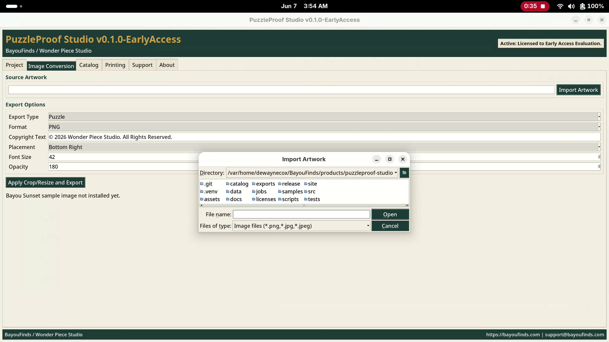

Artwork Tracking
Keep project records connected to artwork, artists, notes, and catalog IDs.
Early Access • 3 Developer Keys Available
Creator-focused puzzle production software
Software for puzzle makers, artists, Etsy sellers, and small creative businesses.
Track artwork, manage approvals, generate artist releases, and prepare puzzle projects for production without getting buried in folders, spreadsheets, and guesswork.
Limited developer preview
We are opening a small early-access test group for PuzzleProof Studio. Only 3 developer keys are available while we validate the workflow with real puzzle makers and creators.
Get Early Access on PayhipCreator-first workflow
Keep project records connected to artwork, artists, notes, and catalog IDs.
Track draft, pending, approved, and revoked project states with less guesswork.
Capture production context, artist details, and business notes in one place.
Create print-ready release documents for cleaner records and smoother handoff.
Check approval, source artwork, copyright owner, and export status before production.
Built for practical small-studio work, not enterprise overhead.
Editable project intake
Customers can submit editable project details online. No PDF editing required. The intake form collects artist contact details, artwork information, approval status, manufacturing requests, notes, and optional reference images through Netlify Forms.
Product proof
PuzzleProof Studio is being built to support the practical steps between finished artwork and a production-ready puzzle product.



Workflow path
Step 1
Step 2
Step 3
Step 5
Meet the team
PuzzleProof Studio is built by real creators for practical puzzle production work.
/usr/bin/bash#
Founder & Lead Developer
Linux systems, workflow automation, creator tools, and software development. Founder of BayouFinds and creator of PuzzleProof Studio.
/usr/bin/bash#
automate
optimize
deploy
repeatC:\PuzzleProof>
Windows Development Tester & Community Partner
Puzzle creator, workflow advisor, software tester, and community partner helping validate PuzzleProof Studio workflows and creator experiences.
C:\PuzzleProof>
test
validate
report
improveFollow the build
PuzzleProof Studio is being built in public as part of the BayouFinds and Wonder Piece Studio creator-tool roadmap. Follow the project, watch updates, and see what is coming next.
Star the repo. Watch development. Request Early Access.
Request access
Early access is intentionally small. Share what kind of creator or business you are and what you want PuzzleProof Studio to help with.
Prefer instant access? Get Early Access on Payhip.
Questions?
PuzzleProof Studio is a BayouFinds product. Reach out through BayouFinds for product questions, early-access details, or project intake support.